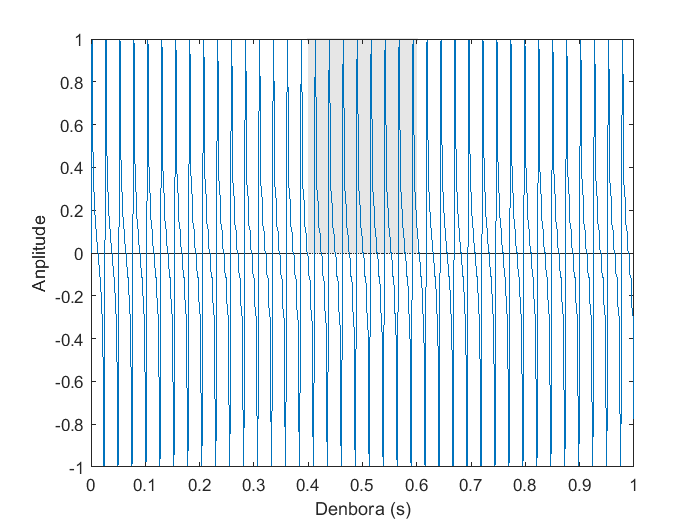

Tonu purua sortu
Interfazea

- Aurrebista-leihoa: Modulua sortuko duen seinalea aurreikupena erakusten du. Parametro baten balioa aldatzean eguneratzen da.
- Amplitude-hautagailua: Sinuaren amplitudea 0-ren eta 1-ren artean hautatzea ahalbidetzen du. Balioa kursorea mugitzen edo testu-kutxaren balioa aldatzen hautatu ahal da.
- Maiztasun-hautagailua: Sinuaren maiztasuna Hertz bat eta 20000 Hertzen artean hautatzea ahalbidetzen du. Balioa kursorea mugitzen edo testu-kutxaren balioa aldatzen hautatu ahal da.
- Fase-hautagailua: Sinuaren fasea −π y π radianen artean hautatzea ahalbidetzen du. Balioa kursorea mugitzen edo testu-kutxaren balioa aldatzen hautatu ahal da.
- Sortu botoia: Bistaratze-leiho berri bat irekitzen du, hautatutako parametroekin sortutako seinale bat, segundu bateko iraupena duena, aztertzeko.
- Adierazpena: Seinalearen adierazpen matematikoa erakusten du, hautatutako parametroekin. Parametro baten balioa aldatzean eguneratzen da.
Tonu purua
Tonu puru bat seinale sinusoide bat da, maiztasun bakarra duena. Modulu honetan sortzen da sinu funtzioa erabiliz, eta hurrengo formularekin adierazten da:
A sin(2πft + 𝜙),
non A anplitudea, f maiztasuna eta 𝜙 fasea den.
- Anplitudea: Seinalearen gehienezko balioa da.

|
Adibide honetan anplitudea 0.5 da. |
- Maiztasuna: Denbora tarte batean seinale-ziklo oso bat zebat aldiz errepikatzen den adierazten du. Hertzetan neurrituta, segundu batean seinale-ziklo baten errepikapen kopurua.

|
Adibide honetan maiztasuna 2 Hz-ekoa da. |
- Fasea: Sinuaren desplazamendua. Radianetan neurtzen da, seinale-ziklo oso bat 2π radian izanez.
 |
Adibide honetan seinalea ziklo ¼-a desplazatuta dago. Beraz, fasea π/2 rad-ekoa da. |
Harmoniko-sintesia
Modulu honek sei tonu puru gainjarri arte sortu ahal ditu, bakoitzak maiztasun eta anplitude ezberdinarekin. Azpialdeko teklatuarekin nota bat aukeratu ahal da, bere lehenengo sei harmonikoak ikusteko.
Interfazea

- Aurrebista-leihoa: Modulua sortuko duen seinalea aurreikupena erakusten du. Parametro baten balioa aldatzean eguneratzen da.
- Maiztasun-hautagailua: Sei osagai bakoitzaren maiztasuna hautatzea ahalbidetzen du. Hautatzeko, testu-kutxaren barnean idatzi edo gezien gainean klik egin ahal da.
- Anplitude-hautagailua: Sei osagai bakoitzaren anplitudea hautatzea ahalbidetzen du. Kursorea mugituz hautatu ahal da.
- Sortu botoia: Bistaratze-leiho berri bat irekitzen du, hautatutako parametroekin sortutako seinale bat, segundu bateko iraupena duena, aztertzeko.
- Zortziduna: Teklatuko noten zortziduna aukeratzeko.
- Teklatua: Nota bat aukeratzea ahalbidetzen du. Nota bat hautatzean, lehenengo sei harmoniko bakoitzaren maiztasuna egokituko zaio osagai bakoitzari, anplitude predeterminatu batekin.
Harmonikoak
Harmonikoak, nota bat ematean, naturalki sortzen diren gehiegarrizko tonu purual dira. Bakoitzaren maiztasuna oinarrizko maiztasuna (emandako notaren maiztasuna) eta zenbaki natural (1, 2, 3, 4...) baten arteko biderkadura da.
Armoniko bakoitzako anplitudearen arabera, soinuaren tinbrea aldatuko da.
Horrela, Do3-ren (130.813 Hz) harmonikoak honako hauek dira:
Harmonikoen maila | Maiztasuna (Hz) | Nota |
1 (Oinarrizko maiztasuna) | 130.813 | Do3 |
2 | 130.813 · 2 = 261,626 | Do4 |
3 | 130.813 · 3 = 392,439 | Sol4 |
4 | 130.813 · 4 = 523,252 | Do5 |
5 | 130.813 · 5 = 654.065 | Mi5 |
6 | 130.813 · 6 = 784,878 | Sol5 |
7 | 130.813 · 7 = 915,691 | Sib5 (Beherantz tonutik kanpo) |
... | ... | ... |
Uhin karratua sortu
Modulo honek segundo bateko iraupeneko uhin karratuko seinale bat sortzen du. Anplitudea, maiztasuna, fase eta ziklo aktiboa hautatu ahal dira.
Interfazea

- Aurrebista leihoa: Moduluak sortuko duen seinalea ikusteko aukera ematen du. Parametroren baten balioa aldatzean eguneratzen da.
- Anplitude-hautagailua: Uhin karratuaren anplitudea 0 eta 1 artean aldatzea ahalbidetzen du. Balioa alda daiteke kurtsorea irristatuz edo testu-kutxaren balioa aldatuz.
- Maiztasun-hautagailua: Uhin karratuaren maiztasuna 1 eta 20000 Hz artean aldatzea ahalbidetzen du. Balioa alda daiteke kurtsorea irristatuz edo testu-kutxaren balioa aldatuz.
- Fase-hautagailua: Uhin karratuaren fasea −π-ren eta π-ren artean aldatzeko aukera ematen du. Balioa alda daiteke kurtsorea irristatuz edo testu-kutxaren balioa aldatuz.
- Ziklo aktiboko hautagailua: Uhin karratuaren ziklo aktiboa % 10 eta % 90 artean alda daiteke.
- Sortu botoia: Beste bistaratze-leiho bat irekitzen du, hautatutako parametroak dituen seinale bat aztertzeko, segundo bateko iraupenekoa.
Uhin karratua
Uhin karratua bi mailen arteko bat-bateko trantsizioen bidez eratzen den uhin periodiko bat da.
Konfiguratu daitezkeen parametroak honako hauek dira:
- Anplitudea: Bi mailen arteko aldea.

|
Adibide honetan anplitudea 1 da. |
- Maiztasuna: Segundo 1-ean sartzen diren ziklo kopurua, Hz-n neurtuta. (Informazio gehiago nahi izanez gero, sakatu hemen).
- Fasea: Seinalea jatorrizko posizioarekiko lekualdatzea. (Informazio gehiago nahi izanez gero, sakatu hemen).
- Ziklo aktiboa: Seinalea goiko mailan (edo maila aktiboan) dagoen aldiaren zatia. Kasu honetan, ehuneko batean neurtzen da, aldiaren guztizko iraupenarekiko.